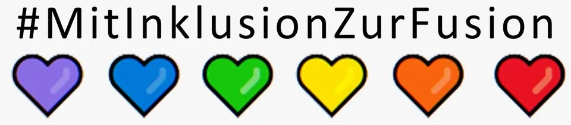
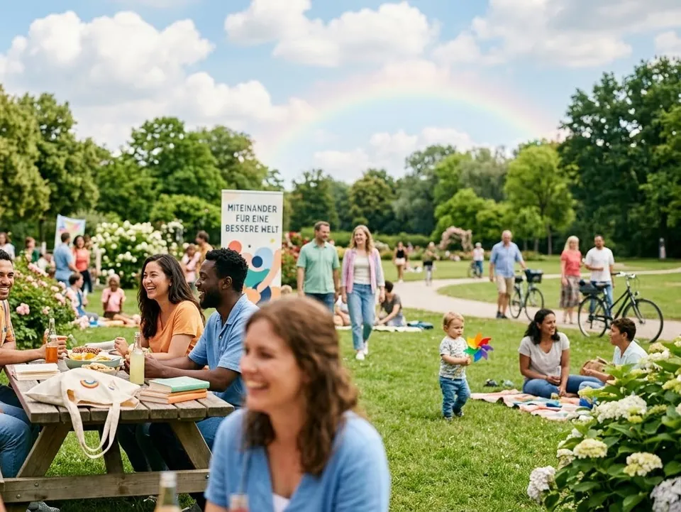
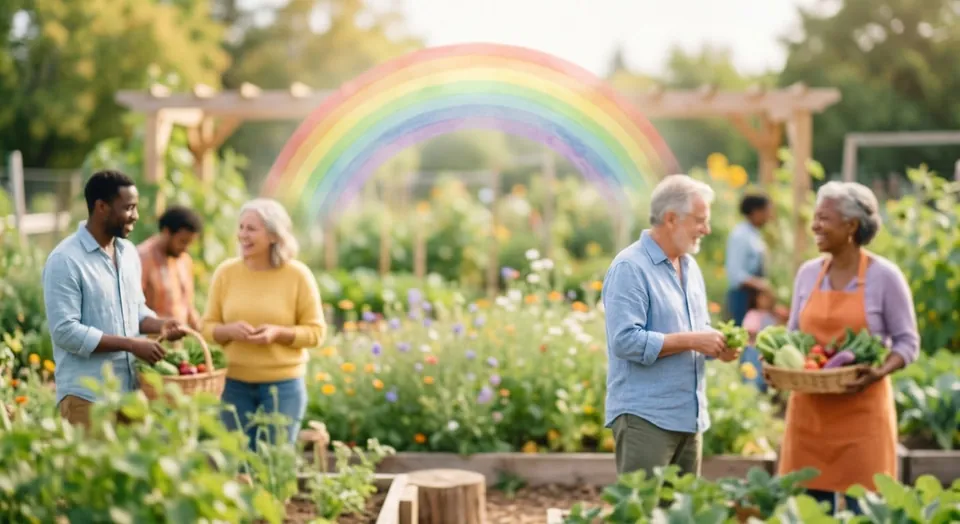

Start/Leistungen/Kognitive Architektur & Coaching
Kognitive Architektur & CoachingKognitive Architektur & Coaching.
Kognitive Architektur, Neurodiversität, Legasthenie: Coaching in Autodidaktik und Neurodivergenz, für Betriebe, Organisationen und Großveranstaltungen. Mit Blick auf Stärken und auf die Frage, wie unterschiedliche Denkweisen gut zusammenarbeiten.
Mit Inklusion zur Fusion!!!
01 Haltung
Unterschiedliche Köpfe denken unterschiedlich. Das ist kein Defizit, sondern eine Ressource, wenn Teams lernen, sie zu nutzen.
02 Für wen
Gruppen, Veranstalter, Firmen.
Gruppen
Für Vereine, Initiativen, Schulklassen oder Teams, die gemeinsam lernen wollen.
- Workshops vor Ort
- Austausch auf Augenhöhe
- Praktische Übungen
Veranstalter
Für Tagungen, Festivals und Bildungsformate, die das Thema ins Programm nehmen.
- Vorträge
- Workshops im Programm
- Inklusive Formate
Firmen
Für Unternehmen, die neurodiverse Mitarbeitende stärken und Teams sensibilisieren wollen.
- Inhouse-Schulung
- Führungskräfte-Workshops
- Begleitung von Teams
Kognitive Architektur
Wie wir denken.
Denken lässt sich als Zusammenspiel von drei Domänen beschreiben: formal (Regeln und Logik), empirisch (Erfahrung und Beobachtung) und kommunikativ (Sprache und Austausch). Wer weiß, wo die eigenen Stärken liegen, kann bewusst zwischen ihnen wechseln.
- Eigene Denkstile erkennen
- Zwischen Domänen wechseln
- Teams nach Stärken aufstellen
03 Antrieb
„Ich will die Welt verändern, indem ich Menschen die richtigen Werkzeuge an die Hand gebe, um selbst zum Entdecker zu werden.“


KI-VisualisierungVision: Gemeinsam
Stimmungsbild · KI-generiert, keine realen Personen

KI-VisualisierungVision: Miteinander
Stimmungsbild · KI-generiert, keine realen Personen
Podcast · Reihe
Neurodiversität – begabt oder behindert!?
Im Podcast „Podcast & Wissenschaft“ geht es auch um Inklusion: wie unterschiedliche Denkweisen Wissenschaft und Zusammenarbeit voranbringen.
04 Formate
Workshop, Inhouse, Einzelcoaching.
Dauer, Umfang und Preise werden ergänzt.
Workshop
Für Gruppen und Veranstaltungen.
- Dauer folgt
- Teilnehmende folgt
Inhouse-Schulung
Im Unternehmen, auf das Team zugeschnitten.
- Dauer folgt
- Inhalte nach Absprache
Einzelcoaching
Für einzelne Personen, vertraulich.
- Termine folgt
- Vor Ort oder online folgt
Anfrage
Ein Workshop für Ihr Team?
- Gruppe, Veranstaltung oder Firma
- Anzahl Teilnehmende und Ort
- Wunschtermin